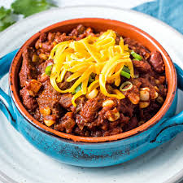

Odin Recipes
Smoky Southwestern Chili
Smoky Southwestern Chili

Description
This smoky, sweet, and spicy chili takes the classic dish to the next level.
With smoked paprika, cinnamon, sweet potatoes, bacon, and beer, the deep and complex flavors of
this dish are sure to elevate your chili game. Best served with cornbread or... a Guinness.
Ingredients
- 2lbs. ground beef
- 1lb. thick-cut bacon
- 2 cans crushed tomatoes
- 1/4 cup tomato paste
- 1 can kidney beans
- 1 can black beans
- 1 can sweet corn
- 1 large sweet potato
- 1 white onion
- 1 can or bottle of stout beer
- 1 cup of chicken stock
- 2 green bell peppers
- 2 tbsp chili powder
- 1 tbsp smoked paprika
- 1 tbsp chili flakes
- 1 tbsp black pepper
- 1 tbsp salt
- 1 tsp garlic powder
- 1 tsp onion powder
- 1 tsp ground cumin
- 1 tsp ground oregano
- (optional toppings): sliced green onion, shredded cheese, sour cream
Steps
- Dice onion and set aside.
- Dice bacon and add to a hot skillet over medium-high heat. When bacon is browned but not yet crisp, use a slotted spoon to remove bacon from skillet. Leave skillet and grease on medium-high heat.
- Add onions and ground beef to skillet and cook until lightly browned.
- In a large pot (at least 4qts) add onions, ground beef, and bacon.
- Add beer and chicken stock to pot and cook over medium-high heat.
- Add crushed tomatoes, beans, and corn.
- Add all spices, including salt and pepper. Stir occassionaly. Bring to a boil.
- While chili is cooking, peel sweet potato and cut into 1" cubes and add to chili.
- Once the chili comes to a boil, turn heat down to simmer. Let chili simmer for at least 2 hours.
- Top with green onions, sour cream, and shredded cheese if desired.
- Enjoy!